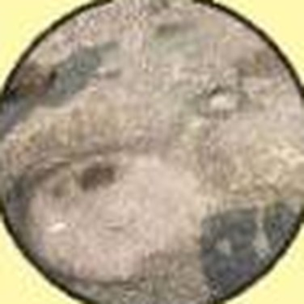

పరిక్రమణ క్రమ సంఖ్య: 13 వర్గం: పంచక్రోశ క్షేత్రం
పరిచయం / స్థల విశేషం
కాళేశ్వరానికి పశ్చిమ దిశలో సప్తకోటేశ్వరం ఉంది. ఇక్కడ గోదావరి ఉత్తర వాహినిగా ప్రవహిస్తోంది.
యోగవిద్యా విశారదులైన మునులు మంత్ర శాస్త్రాన్ని అనుసరించి ఏడు కోట్ల లింగాలను ఇక్కడ స్థాపించి పూజించారు. సప్తకోటేశ్వర తీర్థం కాళేశ్వరంలోని అష్ట తీర్థాలలో (తీర్థాష్టకం) ఒకటిగా చెప్పబడింది.
గోదావరి మాత మానుష రూపం ధరించి కోటేశ్వరుడిని పూజించినట్లు కాళేశ్వర ఖండంలో పేర్కొనబడింది. ఈ తీర్థంలో స్నానం చేసినా, చూసినా పాపాలు నశించి స్వర్గ మోక్షాలు లభిస్తాయి.

మూలం: కాళేశ్వర ఖండం; పంచక్రోశ పరిక్రమణ పటం. ఇది అష్ట తీర్థాలలో మొదటిది.
యాత్రా సమాచారం
కాళేశ్వరం ఎలా చేరాలి · దర్శన సమయాలు · వసతి · యాత్ర ప్లాన్ చేయండి · అన్ని క్షేత్రాలు